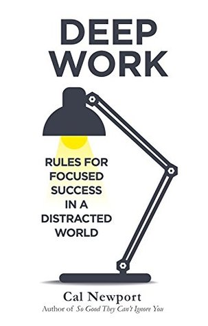

Reading+Notes
Book notes, best first. The number is how strongly I'd recommend it out of 10, not how much I enjoyed it. Each page has my take at the top and the notes I kept while reading below.
The 4 Disciplines of Execution McChesney, Covey and Huling, 10/10 Work Clean Dan Charnas, 9/10 On Confidence The School of Life, 9/10 Effortless Greg McKeown, 9/10 The Science of Enlightenment Shinzen Young, 9/10 You Need a Budget Jesse Mecham, 9/10 
Deep Work Cal Newport, 9/10 Make Time Jake Knapp and John Zeratsky, 8/10 Rubicon: The Last Years of the Roman Republic Tom Holland, 8/10 How to Win an Indian Election Shivam Shankar Singh, 8/10 Your Money: The Missing Manual J. D. Roth, 8/10 Marks of Maturity Tim Elmore
Plain HTML. No tracking. Last updated September 2026. RSS